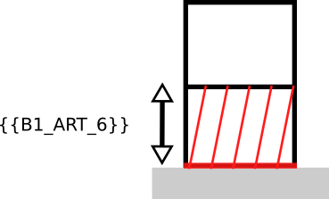

IAUIDF-001 - Distance minimale à la voirie
Modèle de phrase
Les bâtiments ne doivent pas être construits à une distance inférieure à m de la voirie.
Paramètres
B1_ART_6
Distance minimale des constructions par rapport à la voirie.
Explications
Il n'est pas possible de construire un bâtiment dans une zone de m mesurée à partir de la voirie.

Implémentation
Le recul est pris en compte dans la génération des bandes constructibles (classe java BandProduction). Dans la classe PredicateIAUIDF, une vérification est effectuée pour évaluer si le bâtiment se trouve dans cette bande. Dans le cas où le bâtiment s'implante dans la première bande, celui ci se colle si possible à l'alignement (ligne parallèle à la voirie et se trouvant à une distance de m)